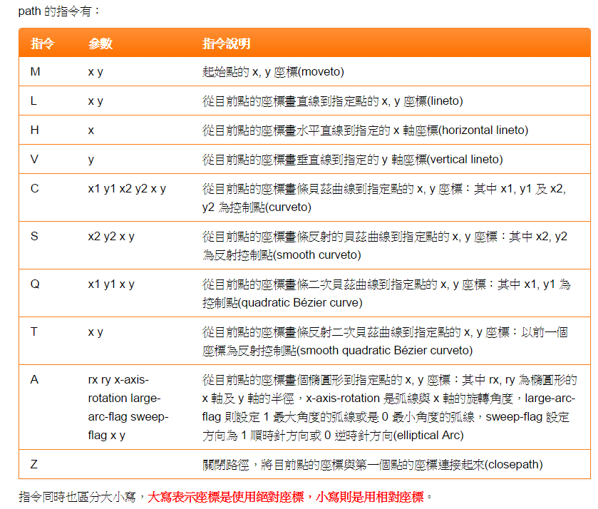
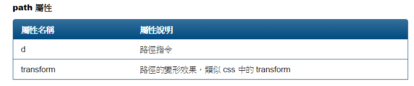

HTML SVG
W3C school 教學
.
教學2
所有SVG 圖形要包在"svg" tag 裡 可以設定畫板範圍
用g tag 包裹起來的圖形可以一起做設定(svg tag 也可以做一些統一設定 fill ....)
stroke="black"(線顏色) stroke-width="2"(粗細) fill="black"(填滿色) font-size="30"(字大小用於SVG的text) font="sans-serif"(字型SVG的text)
target="_blank" text-anchor="middle"> (字錨點)
等
練習一成品
用svg 的 animatetranform tag 製作動畫 (CSS也可以但firefox會有問題)
50.2%
50.2%
80%
80%
step1:Create a circle
circle 屬性 cx 和 cy 是圓的中心點 , r為半徑
step2:Create a clip path 剪裁
defs tag 用法
I love SVG!
Sorry, your browser does not support inline SVG.
step3:Create a overlapping circle
圖片順序依照程式先後順序疊(先寫的在底下)
我是在後面的全圓
我剪裁的半圓
step4:剪裁部分改用path劃出波浪(用QT即可)
path 屬性教學
text tag的 text anchor
 
拿來剪裁的圖形
----->
50.2%
50.2%
其他:Create a marking 遮色片
I love SVG!
Sorry, your browser does not support inline SVG.